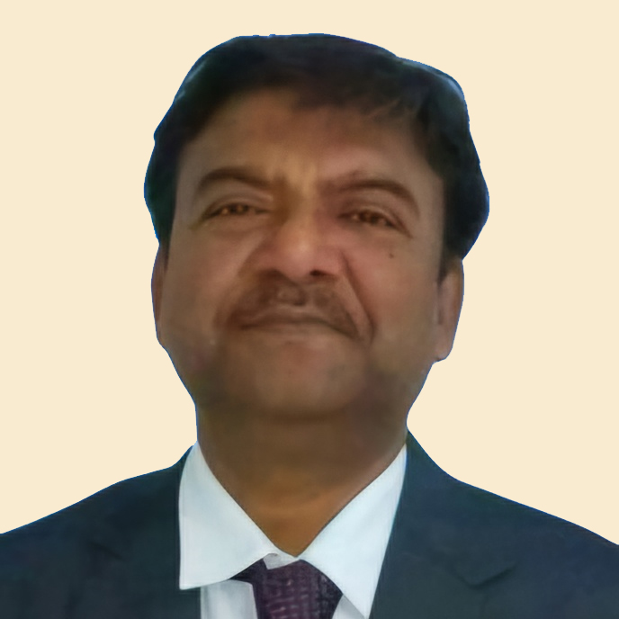
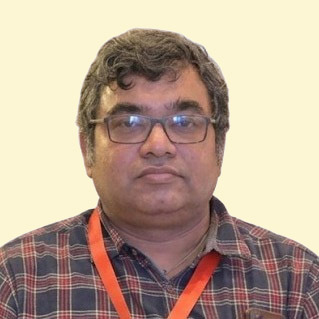

A COMMUNITY ADVANCING PHARMACOLOGY
Small discoveries.
Life-changing
possibilities.
Connecting minds. Advancing medicine.
Shaping better health, together.
＋FROM MOLECULE
TO MEANINGFUL CHANGE
TO MEANINGFUL CHANGE
↓ SCROLL TO EXPLOREINDIAN PHARMACOLOGICAL SOCIETY · WEST BENGAL
01 / THE SOCIETYROOTED IN BENGAL. CONNECTED BY SCIENCE.
A shared purpose.
A healthier tomorrow.
Progress begins when curious minds come together.
The West Bengal State Branch of the Indian Pharmacological Society brings pharmacologists, researchers, teachers and students together to advance education, research and clinical practice.
Explore what drives us ↗33↗
State conferences
5↗
National conferences hosted
One
Shared commitment to better health
02 / SCIENCE WITH PURPOSE01 — 03
FROM DISCOVERY TO IMPACT
Big change starts
at the smallest scale.
Fostering research in pharmacology and allied biomedical sciences, with the health needs of our country at its heart.
01 / RESEARCH & DISCOVERYKnowledge grows
when we share it.
Conferences, scientific presentations and academic workshops connect ideas with the people who can take them further.
02 / EDUCATION & EXCHANGEBetter science.
More meaningful care.
Collecting, evaluating and sharing knowledge about medicines and therapeutics for the benefit of society.
03 / CLINICAL EXCELLENCE03 / COME TOGETHERIPSCON ’26 · KOLKATA
INTERNATIONAL CONFERENCE OF PHARMACOLOGY
New perspectives.
Lasting connections.
Join the pharmacology community in Kolkata for scientific exchange, research and collaboration.
Register for IPSCON ’26 ↗Download conference brochure ↓SCIENCE. COMMUNITY. POSSIBILITY.
IPSCON’26
THIS TIME AT
Kolkata.
WEST BENGAL CHAPTERTHE CITY OF JOY ↗
PLAN YOUR PARTICIPATION
Find your registration category.
Published rates · 16 April–31 October 2026
₹3,000per delegate
↗Visit the official registration page for current fees, confirmed dates and payment details.
04 / THE PEOPLE BEHIND THE PURPOSEIPSCON ’26 ORGANISING TEAM
Guided by experience.
United by possibility.
Meet the people bringing our
scientific community together.
ORGANISING CHAIRMAN

Dr. Payodhi Dhar

Dr. Sushanta Kumar
Bandyopadhyay

Dr. Tanmoy Gangapadhyay
05 / BELONG TO SOMETHING BIGGERIPS WEST BENGAL
Your next chapter
in science
starts here.
Enquire about membership ↗01
Connect with your community
Meet pharmacologists, researchers, clinicians and educators from across India.
02
Keep your curiosity growing
Participate in conferences, workshops, CME programmes and scientific discussions.
03
Take your ideas further
Share research, build academic collaborations and support the next generation of scientists.
LET’S START A CONVERSATION